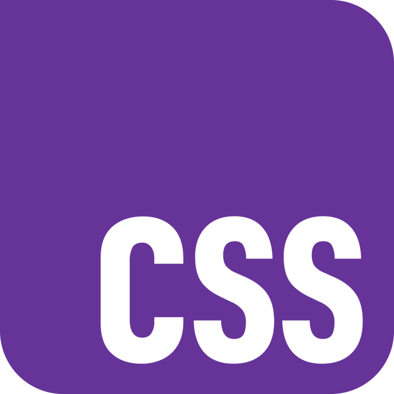
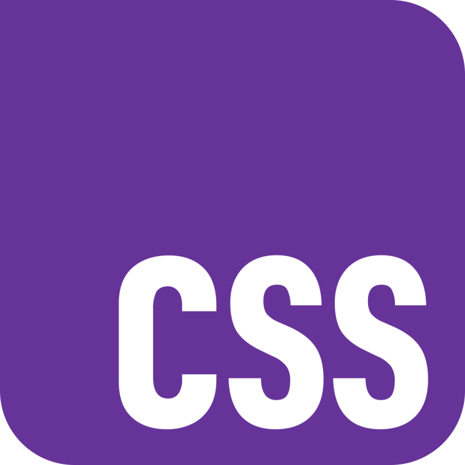
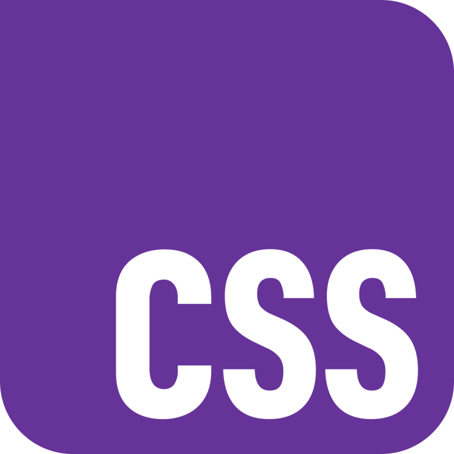

Technical Skills


 


I am a graduate student in the University of Western Australia's Master of Public Policy Program specialising in economics. I received my Bachelor's degree in Computing & Software Systems from the University of Melbourne in 2024 where I became deeply interested in the relevance of technology in policy settings, especially in terms of macroeconomic outcomes.
In postgraduate study I hope to apply my computational and analytical skills to modelling economic systems - ideally to derive advanced (and useful) insights into policy choices.
A price comparison tool specialising in personal computer components - my work on this project involved web-scraping prices from leading retailers.

Perth, Western Australia
Master of Public Policy in Economics
February 2025 - November 2026 (expected)
Melbourne, Victoria
Bachelor of Science in Computing & Software Systems
August 2020 - August 2024
Mandurah, Western Australia
Western Australian Certificate of Education
February 2019 - October 2019
Perth, Remote | August 2023 - Present
Intuition is a business that I founded in 2023. Currently delivering website and marketing solutions, as well as broader technical advice to small businesses. My clients such as Janine Nairn at Beautiful Spaces Interior Design (BSID), have seen exceptional year on year growth in their sales and website traffic.
Glebe, NSW | August 2024 - November 2024
During the second half of 2024, I worked with the United Workers Union on their national Big Steps campaign. In this role I developed a critical understanding of the multi-employer bargaining process and witnessed how such policy initiatives can improve productivity and change lives.